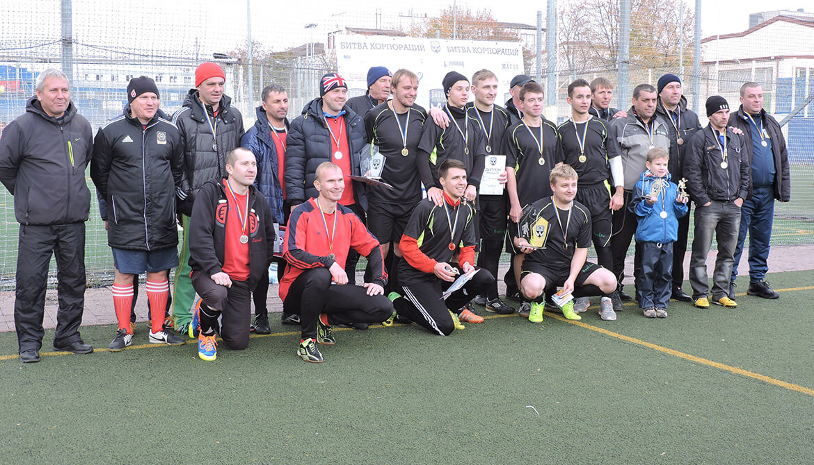

Мини-футбол - "Битва корпораций" II сезон
Как и было запланировано, 8 октября 2016 года в субботу состоялся II этап II сезона «Битвы корпораций», в котором приняла участие сборная КП «ХТС».
Турнир собрал 20 команд. Начало турнирной сетки явило 5 групп, каждая из которых состоит из 4 команд.
Организаторы турнира не сдержали своё предсезонное обещание, в котором было сказано, что команды-участницы, начавшие «Битву корпораций II сезон» с первого тура, будут участвовать во всех этапах соревнований. На втором этапе «мини-футбол», вместо команд «Lifecell» и «Теллур», участвовавших в «мини-гольфе», участвовали «Центр экстренной медпомощи» и «Ресторан «Пробка»». Эти замены участников уже внесли коррективы в итоговое положение сезонных бойцов, особенно тех, которых они опередили в группе.

Постараюсь поподробнее описать матчи с участием команды «Харьковские тепловые сети», которые проходили в группе С. Хочу отметить, что наши более опытные и искушённые игроки, дают возможность проявить себя на поле резервистам. За это им большое спасибо и респект!
Групповой турнир (8 октября 2016 года):
I
«Харьковские тепловые сети» - «Artjoker» - 3:0 (11:05)
Состав нашей команды: Алексей Вишня – Юрий Ващенко, Артём Воронов, Алексей Абаджи, Олег Терентьев – Виктор Лукьянченков, Алексей Безюлев, Константин Галкин.
Тренер команды Радомир Иванович Бойко дал установку играть от обороны и присматриваться к сопернику, спортсменам из IT-компании. Эта тактика очень скоро принесла плоды. На 5-й минуте Юрий Ващенко, после удачной вихревой комбинации и передачи от Олега Терентьева открывает счёт в матче. Далее следуют замены и на поле один за другим появляются резервисты. Команда действует остро и снова создаёт опасные моменты у ворот соперника. Команда играла уверенно благодаря, довольно таки, быстрому голу. За всю игру действительно опасно возле наших ворот было от силы пару раз. Следующий гол в ворота соперников влетел на 6-й минуте 2-й десятиминутки: Юрий Ващенко завершил очередную комбинацию нашей команды, грамотно спланированную Артёмом Вороновым. После второго гола, глядя на таймер, «Artjoker» уже совсем поплыл, что позволило Ващенко оформить хет-трик на 8 минуте второго тайма.
II
«Харьковские тепловые сети» - «Атлант» - 2:0 (11:56)
Состав нашей команды: Алексей Вишня – Юрий Ващенко, Артём Воронов, Алексей Абаджи, Олег Терентьев – Виктор Лукьянченков, Алексей Безюлев, Константин Галкин.
Не прошло и часа с начала прошлого матча, как нашей команде предстояла новая баталия. На этот раз нашим соперникам выступил интернет-магазин стройматериалов «Атлант», обыгравший перед этим команду «Владар» со счётом 7:0. Как видно выше, наша стартовая пятёрка не претерпела изменений. Игра была очень нервная и напряженная. В первой десятиминутке мы создавали моменты, но никак не могли их реализовать. Несколько раз остро подключался к атакам наш голкипер Алексей Вишня, однако, ни его удары, ни удары партнёров по команде никак не хотели оказываться в сетке с внутренней стороны. Команда «Владар» играла во всех матчах одной единственной пятёркой. В середине второго тайма наш тренер попросил тайм-аут. Тактические указания дали свои плоды уже через полминуты: Абаджи замкнул передачу Воронова. Эта радость произошла на 15-й минуте. Этот гол дал возможность сделать первые замены в стартовой пятёрке. На 17-й минуте Терентьев отдал пас на Лукьянченкова и тот, опережая защитников, слева вошёл в штрафную площадь и забил с левой не рабочей ноги в ближний угол. После второго гола команда добавила к внушительному территориальному и игровому преимуществу ещё большую раскрепощенность, что позволило спокойно довести матч до логичного завершения. Один по настоящему острый момент у ворот Вишни сопернику, всё же, удалось создать, но Алексей был на высоте.
III
«Харьковские тепловые сети» - «Владар» - 8:0 (12:45)
Состав нашей команды: Алексей Вишня – Артём Воронов, Олег Терентьев, Константин Галкин, Виктор Лукьянченков – Алексей Абаджи, Алексей Безюлев.
К завершающему матчу группового этапа команда «ХТС» подошла лидером и без единого пропущенного мяча. Команда перешла в щадящий режим и перед матчем с производителем аккумуляторных батарей отпустила нашего главного бомбардира Юрия Ващенко по производственной необходимости, которая часто не даёт нашим сотрудникам посвятить время спортивным баталиям.
Изучив соперника предварительно, наша команда бросилась прощупывать эти слабые места. На 3-й минуте Лукьянченков забил первый гол. На 6-й минуте, появившийся на поле Безюлев, с передачи Абаджи удваивает счёт. Уже на 7-й минуте вратарь Вишня с передачи Воронова забивает свой первый гол в этом турнире. В конце тайма, на 9-й минуте Абаджи с передачи Галкина делает счёт 4:0.
После перерыва остроты не убавилось и 5-й гол забивает Воронов с передачи Абаджи на 12-й минуте. На 13-й минуте новый привет влетает в ворота «Владара»: Безюлев получает мяч от Абаджи и после этого пяткой прокидывает возле голкипера и пяткой же забивает самый красивый гол нашей команды. Браво опыт! На 17-й минуте Терентьев слева получает передачу, оттягивает на себя соперника и отдаёт пас на Лукьянченкова, подключившегося со своей половины и завершившего эту комбинацию в одно касание. Наш капитан Артём Воронов не жадный и рассудительный на 18-й минуте позволяет голкиперу Алексею Вишне оформить дубль и сделать счёт 8:0.
Итоги группового турнира
- Команда «ХТС» не пропустила ни одного гола.
- Больше нас из всех групп забил только «Альфа-банк», вылетевший, в последствии, в 1/4 турнира.
- Команда «ХТС» показала лучшую разницу забитых и пропущенных из всех групп.
Турнир плей-офф (16 октября 2016 года):
1/8
«Харьковские тепловые сети» - «NovoAbrasive» - 3:2 (11:32)
Состав нашей команды: Алексей Вишня – Юрий Ващенко, Артём Воронов, Алексей Абаджи, Олег Терентьев – Виктор Лукьянченков, Алексей Безюлев.
Стадия плей-офф проводилась на неделю позже от запланированного, так как 9 октября, под действием мощнейшего ливня, поля футбольной академии «Металлист» превратились буквально в рисовые. 16 октября не было ливней, а лишь кратковременный моросящий дождь, как и на групповой стадии, но температура наружного воздуха значительно снизилась. Обещанное подкрепление нашей команды не явилось к 1/8 финала. Матч команда начала довольно уверенно и на 7-й минуте Ващенко распечатал ворота соперников. С тем, чтобы удвоить преимущество, команда наша команда определилась уже на 9-й минуте, когда забил Абаджи с передачи Вишни. На этой мажорной ноте первый тайм и закончился.
Стоит отметить, что соперники имели шансы как в первом, так и во втором тайме. Однако, в начале, они были не такими опасными, но с постепенным нарастанием напряжения. Сразу после перерыва, на 11-й минуте Абаджи с передачи Воронова доводит счёт до крупного – 3:0. Все игроки стартового состава и игроки заменяющие, не воспользовались, как следует, своими возможностями на поле. Уже на 12-й минуте соперник отквитал один гол, воспользовавшись расслабленностью и несогласованностью в действиях обороны. Ещё один гол команда «NoveAbrasive», производитель абразивных кругов для резки, забила в наши ворота на 19-й минуте. До этого у нас сильно не шла реализация и пропущенный гол был не логичным. На этом не очень приятном моменте матч и завершился. В данном случае, удовольствие от победы присутствует.
1/4
«9.8G» - «Харьковские тепловые сети» - 1:3 (12:56)
Состав нашей команды: Алексей Вишня – Юрий Ващенко, Богдан Чепель, Артём Воронов, Алексей Абаджи - Олег Терентьев.
Матч четвертьфинала предъявил для нас новые требования. Наконец-то появился на игру Богдан Чепель и сразу же занял место в стартовом составе. Матч с командой компании, развивающей фитнес-бизнес начался не без шансов для нас, но на 4-й минуте случилось досадное нарушение в нашей штрафной, в следствии чего мы получили 6-ти метровый в свои ворота, который едва не потянул Алексей Вишня. Таким образом, наши соперники вышли вперёд и получили психологическое преимущество. Статус-кво возобновил Воронов с передачи Чепеля на 7-й минуте. Хорошо проведя концовку первого тайма, наши продолжали наращивать обороты и во втором тайме.
На 14-й минуте Чепель уже отдал передачу на Абаджи – 1:2. Алексей отыгрался за досадный фол в нашей штрафной, совершённый им на 4-й минуте. Теперь уже легче, но соперник - тоже не подарок. Не потерялся в этом круговороте событий Олег Терентьев, которому удавалось поддерживать пульс и дыхание команды на должном уровне. На 18-й минуте Абаджи с передачи Воронова уже доводит счёт до крупного - 1:3. Ещё немного и полуфинал. Звучит финальный свисток и это значит, что мы уже в четвёрке лучших.
1/2
«Zotti» - «Харьковские тепловые сети» - 0:2 (14:00)
Состав нашей команды: Алексей Вишня – Юрий Ващенко, Богдан Чепель, Артём Воронов, Алексей Абаджи – Сергей Проходов.
Ещё до начала матча стало известно, что команду ждёт усиление в лице Сергея Проходова, которому, наконец, удалось выбраться с работы. Команда «Zotti», являющаяся специалистами по швейному оборудованию, создала впечатление крепких гренадёров, которым не чужда футбольная техника и тактика. Быстрый гол, уже на 4-й, в исполнении Воронова с передачи Чепеля был вполне закономерен. Чуть позже нападающий соперников опасно пробил, находясь слева от ворот в 10 метрах, но наш вратарь среагировал. В самом начале матча рядом с полем появился Проходов и вместо Абаджи скоро вошёл в игру. Это укрепило нашу оборонительную составляющую.
Ребята контролировали ход встречи, но чувствовалось, что минимальная ошибка может привести к максимально неприятным последствиям. Ведь, напряжение растёт, а сил у каждой из команд в третьем матче кряду не прибавляется. Соперники во втором тайме имели ещё один опасный момент, но вратарь вытащил мяч из правого угла. Кроме этого, у ворот Алексея Вишни было относительно спокойно, а моменты у ворот соперников то и дело появлялись. На 19-й минуте, Богдан Чепель забивает гол с передачи Юрия Ващенко, который расставляет всё по своим местам. Закономерный результат, который оправляет нашу команду в большой финал, а «Zotti» отправляются в малый финал.
Фото с соревнований смотрите здесь ⇐
финал
«Харьковские тепловые сети» - «Freshline» 1:1 (пенальти 3:5) (15:27)
Состав нашей команды: Алексей Вишня – Юрий Ващенко, Богдан Чепель, Артём Воронов, Сергей Проходов.
Начать своё повествование я хочу со страшной болезни, с которой человек не может быть допущен до футбола. Речь идёт об астигматизме у судьи, который ему помог увидеть подробности двух моментов, произошедших на поле, с диаметрально противоположной стороны и закрепить это неправильное видение в его мозгу, как единственно правильное, но далее об этом ещё расскажу.
Наша стартовая пятёрка отбегала весь матч без замен и имела ряд стопроцентных и не очень моментов. На 10-й минуте Артём Воронов завершает очередную тактическую многоходовку. Гол в раздевалку – это хорошо, но, чтобы иметь уверенность с такими фартовыми соперниками, как «Freshline», нужно было забивать ещё хотя-бы один. Был момент у Проходова, но он, замыкая передачу на дальней штанге, послал мяч вдоль ворот. Интересный эпизод завершения атаки в исполнении Богдана Чепеля также не принёс необходимых плодов.
Соперник тоже умело контролировал мяч и чувствовался их молодецких задор. По-настоящему интересный момент получился у «Freshline» лишь один, когда, после удара во втором тайме с правого фланга и небольшой корректировки, мяч просачивался под ближнюю штангу, но Вишня чётко сыграл ногой в падении. Игрок «Freshline» ударил мяч локтем в газон и это увидели все кроме судьи, но он начал доказывать, что никто кроме него этот момент вообще физически видеть не мог. Очень красивый момент получился после наброса при исполнении углового, когда Воронов бил с лёту, но мяч встретил корпус защитника где-то в двух метрах от ворот. Игра шла к логическому завершению и, на этот раз, категоричное решение судьи оказалось для нас фатальным. Мяч вышел за поле от соперника. Это справедливо по всем законам физики и оптики, но судья мечтал получить пенальти кулаком в лицо. После секундного замешательства и неразберихи, соперники ввели мяч и предательский выстрел Багликова с рикошетом от нашего игрока вошёл в нашу сетку. Стоит отметить, что Багликов играет в пяти разных городских турнирах, а в «Freshline» он заявлен, как практикант.
КП «ХТС» не ставит целью победить любой ценой и устраивать временно на работу ради одного турнира никого не собирается. Так, как соперники сравняли счёт за 10 секунд до конца, выйти вперёд нам не представилось уже временных возможностей.
В серии пенальти фортуна, как в ½ финала и ¼ финала, была вновь на стороне «Freshline». Серию пенальти начинали соперники: 0:1 / 1:1 - Ващенко, 1:2 / 1:2 - Проходов (вратарь), 1:3 / 2:3 - Воронов, 2:4 / 3:4 - Чепель, 3:5. Победа «Freshline», а «Теплосеть» получает кубок за второе место и серебряные медали. Футбол и в этот раз полон неожиданностей.
После прошлогоднего триумфа в мини-футболе, команда завоёвывает второе место и это тоже замечательно! Ведь, средний возраст нашей команды, наверное, более 40 лет.
Кликнув по этой картинке, вы можете подробно посмотреть весь турнирный путь наших героев:
Личные достижения турнира:
- Лучший вратарь: Алексей Вишня (ХТС)
- Лучший бомбардир: Владимир Ермилин (Водоканал) - 11 мячей
- Лучший игрок: Владислав Багликов (Freshline)
Второе место в мини-футболе помогло сборной КП «ХТС» подняться в тройку лидеров (из 22-х команд) общего зачёта «Битвы корпораций 2016-17» после двух видов:
- Zotti – 6 очков
- Харьковводоканал – 10 очков
- ХТС – 11 очков
Статистика КП "ХТС" | |||||||
| # | Игрок | Игры | проп | гол | пас | Г+П | |
| 1 | Алексей Вишня (ГК) | 7 | 4 | 2 | 1 | 3 | |
| 2 | Артём Воронов | 7 | 4 | 5 | 9 | ||
| 3 | Алексей Абаджи | 6 | 6 | 3 | 9 | ||
| 4 | Юрий Ващенко | 6 | 4 | 1 | 5 | ||
| 5 | Олег Терентьев | 5 | 0 | 3 | 3 | ||
| 6 | Виктор Лукьянченков | 4 | 3 | 0 | 3 | ||
| 7 | Алексей Безюлев | 4 | 2 | 0 | 2 | ||
| 8 | Богдан Чепель | 3 | 1 | 3 | 4 | ||
| 9 | Константин Галкин | 3 | 0 | 1 | 1 | ||
| 10 | Сергей Проходов | 2 |
Выражаю огромную благодарность нашему спортивному инструктору Анатолию Сидь за предоставленные подробные статистические данные и профессиональные фото!
Профком КП «ХТС» руководит подготовкой всех наших сборных команд к соревнованиям. Из профсоюзного фонда выделяются деньги на оплату таких соревнований с участием КП «ХТС», как «Битва корпораций» и «Областная спартакиада работников жилищно-коммунального хозяйства и местной промышленности». Любой желающий спортсмен КП «ХТС» может участвовать в любых спортивных мероприятиях, отобравшись на местных соревнованиях. Любой спортсмен, являющийся членом профсоюзной организации, получает денежное поощрение за достижения в каком-либо из видов спортивных соревнований. Профком оплачивает аренду спортивных площадок для отбора наших спортсменов на соревнования по всем видам спорта «Битвы корпораций». Профком КП «ХТС» оплачивает аренду футбольного поля, на котором раз в неделю тренируется более десятка наших работников.